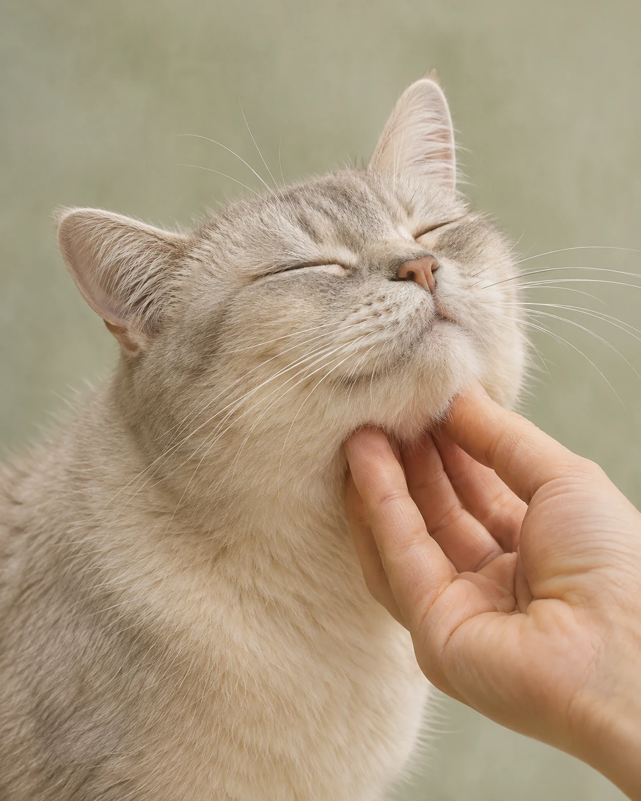

Wysoka pod Wrocławiem
Ich zdrowie.
Twój spokój.
Są częścią Twojej rodziny. Ich zdrowie zasługuje na uważną opiekę — od pierwszych wspólnych dni po spokojną starość.
Sprawdź godziny przyjęć poniżej
Przychodnia dla psów, kotów
i ludzi, którzy je kochają.


Troska jest w szczegółach.CZTERY ŁAPY. I CAŁY ICH ŚWIAT.
Dla Ciebie przyjaciel.
Dla nas ktoś ważny.
Za każdą parą łap stoi własna historia. Pierwszy spacer, ulubiony koc, codzienny rytuał. Chcemy, żeby tych wspólnych chwil było jak najwięcej.
W przychodni Cztery Łapy i Ty opiekujemy się psami i kotami w każdym wieku. Łączymy profilaktykę, diagnostykę i codzienną opiekę weterynaryjną w jednym miejscu, blisko Twojego domu.
NASZA OPIEKA
Na każdym etapie.
Z tą samą troską.
Od szczepienia po diagnostykę. Sprawdź, w czym możemy pomóc Twojemu zwierzakowi. O szczegóły, ceny i wolne terminy zapytaj telefonicznie.
Wizyty i kontrole
Uważność zaczyna się od spotkania.
Gdy coś Cię niepokoi i wtedy, gdy chcesz sprawdzić, czy wszystko jest w porządku.
- Wizyta, gdy zwierzę choruje
- Wizyta kontrolna
- Profilaktyczny przegląd zdrowia
- Pomiar ciśnienia krwi
Szczepienia i profilaktyka
Małe kroki dla wspólnej przyszłości.
Dbamy o zdrowie psów i kotów na kolejnych etapach ich życia.
- Szczepienie przeciw wściekliźnie
- Szczepienia psów: choroby zakaźne, kaszel kenelowy, leptospiroza
- Szczepienia kotów: choroby zakaźne, białaczka kotów (FeLV)
- Czipowanie i usuwanie kleszczy
Diagnostyka
Żeby lepiej zrozumieć, co się dzieje.
Badania, które pomagają spojrzeć na zdrowie Twojego zwierzaka dokładniej.
- Badania krwi: profil podstawowy, rozszerzony, geriatryczny i tarczycowy
- Badanie moczu i kału, w tym test na Giardię
- Test FIV/FeLV u kotów
- USG jamy brzusznej i RTG
Codzienny komfort
Troska również o drobne sprawy.
Pielęgnacja, która jest częścią codziennej opieki nad pupilem.
- Przycinanie pazurów
- Toaleta uszu
- Toaleta gruczołów okołoodbytowych
Przyjmujemy pakiety weterynaryjne PETHELP.
Zapytaj o wizytę: 71 786 78 84MAŁY GEST. WAŻNY TERMIN.
O ich zdrowiu
warto pamiętać.
W codziennym zabieganiu łatwo przeoczyć datę. Dodaj do swojego kalendarza przypomnienie, żeby wcześniej zadzwonić i umówić szczepienie.
Dane wpisujesz tylko dla siebie.
Przypomnienie powstaje w Twojej przeglądarce.
Umów szczepienie zwierzaka
Wybierz datę szczepienia
Przypomnienie tydzień wcześniej o 9:00ZAUFANIE, KTÓRE MA ZNACZENIE
Dobre relacje zaczynają się
od dobrej opieki.
BLISKO CIEBIE, BLISKO NICH
Dobrze, że
jesteście.
Znajdziesz nas w Wysokiej, tuż przy południowej granicy Wrocławia. Na wizytę najlepiej umówić się telefonicznie.
71 786 78 84 agajaneczek@gmail.com52-200 Wysoka, gmina Kobierzyce
ZAPRASZAMY
Czas dla
Twojego przyjaciela.
- Poniedziałek–piątek
- 10:00–18:00
- Sobota
- 10:00–12:00
- Niedziela
- Nieczynne
W święta godziny mogą się różnić.
W razie wątpliwości zadzwoń.
Nasz adres to Chabrowa 2D. W części katalogów internetowych wciąż widnieje poprzedni: Chabrowa 95BC. Dojazd jest bez szlabanu.

Chabrowa 2D.
Cztery Łapy i Ty
52-200 Wysoka
Teraz widzisz statyczną mapę.
Mapa interaktywna połączy się z Google dopiero po Twojej zgodzie.